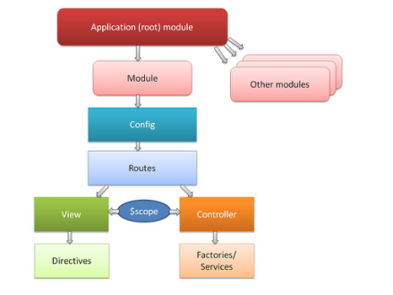
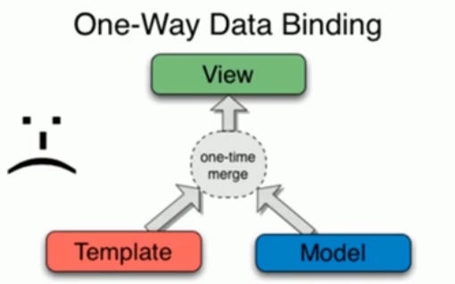
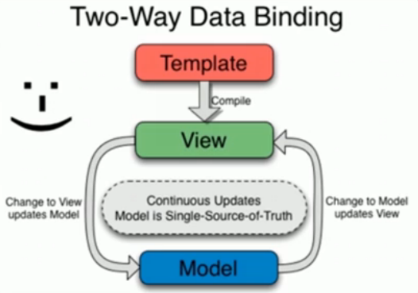

AngularJS
AngularJS是一款由Google公司开发维护的前端MVC框架，其克服了HTML在构建应用上的诸多不足，从而降低了开发成本提升了开发效率。
介绍
特点
与jQuery对比 ：jQuery更准确来说只一个类库（类库指的是一系列函数的集合）以DOM做为驱动（核心），而AngularJS则一个框架（诸多类库的集合）以数据和逻辑做为驱动（核心）。
框架对开发的流程和模式做了约束，开发中需要遵循约束进行开发，更注重实际的业务逻辑。
AngularJS 有着诸多特性，最为核心的是：模块、双向数据绑定、语义化标签、依赖注入等。
与之类似的框架还有BackBone,KnockoutJS,Vue（国产）,React（facebook）等。
下载
三种方法：
- 通过AngularJS官网下载，不过由于国内特殊的国情，需要翻墙才能访问。
- 通过npm下载，npm install angular
- 通过bower下载，bower install angular
bower是什么？
MVC
MVC是一种开发模式，由模型（Model）、视图（View）、控制器（Controller）3部分构成，采用这种开发模式为合理组织代码提供了方便、降低了代码间的耦合度（关联度）、功能结构清晰可见。
功能：数据转成视图展现给用户
- 模型（Model）一般用来处理数据（读取/设置），一般指操作数据库。
- 视图（View）一般用来展示数据，比如通过HTML展示。
- 控制器（Controller）一般用做连接模型和视图的桥梁。
模块化
使用AngularJS构建应用（App）时是以模块化（Module）的方式组织的，即将整个应用划分成若干模块，每个模块都有各自的职责，最终组合成一个整体。
采用模块化的组织方式，可以最大程度的实现代码的复用，可以像搭积木一样进行开发。
定义应用
- 通过为任一HTML标签添加
ng-app属性，可以指定一个应用，表示此标签所包裹的内容都属于应用（App）的一部分。此标签
实例：
|
|
|
|
定义模块
定义控制器

指令
HTML在构建应用（App）时存在诸多不足之处，AngularJS通过扩展一系列的HTML属性或标签来弥补这些缺陷，所谓指令就是AngularJS自定义的HTML属性或标签，这些指令都是以ng-做为前缀的，例如ng-app、ng-controller、ng-repeat等。
内置指令
ng-app指定应用根源素 至少一个ng-controller指定控制器ng-show控制元素显示 true/falseng-hide控制元素隐藏 true/falseng-if控制显示- 与
ng-show使用方法一样，但是ng-show标签false后还是会存在
- 与
ng-src图片路径 导致多一次请求ng-herfng-class可以传入对象ng-class='{red:true,blue:true}'>``` 1234567891011121314- `ng-include` 引入模板-- js不能引用本地文件 只能通过服务器访问- `ng-disabled` 修复之前disabled只能删除才能可操作 用true/false 就可以控制- `ng-readonly` true/false 控制只读与否- `ng-checked` true/false 控制是否选中复选框- `ng-selected` true/false 控制下拉框是否被选择### 自定义指令``` html<div class='tag'></div><tag></tag><!-- directive:tag -->
|
|
注意点：
- 规定的几种类型
- E：element 标签元素
- A：attribute 节点
- C：class 类名
- M：mark 标记备注 需要 replace 替换占位符
template：
- 字符串定义时，需要有一个整的父元素包裹12template:'<h1>hello</h1><p>world</p>',template:'<div><h1>hello</h1><p>world</p></div>',
- 字符串定义时，需要有一个整的父元素包裹
templateUrl：
- 与template不能同时存在，引入文件
数据绑定
AngularJS是以数据做为驱动的MVC框架，所有模型（Model）里的数据经由控制器（Controller）展示到视图（View）中。
所谓数据绑定指的就是将模型（Model）中的数据与相应的视图（View）进行关联，分为单向绑定和双向绑定两种方式。
单向数据绑定
单向数据绑定是指将模型（Model）数据，按着写好的视图（View）模板生成HTML标签，然后追加到DOM中显示，如之前所学的artTemplate 模板引擎的工作方式。
如下图所示，只能模型（Model）数据向视图（View）传递。

双向数据绑定
双向绑定则可以实现模型（Model）数据和视图（View）模板的双向传递，如下图所示。

|
|
|
|
相关指令
ng-clickng-dbclickng-blurng-keydownng-keyupng-switchonng-switch-when判断有__的时候
…
作用域
嵌套产生父子层级关系 正常的作用域关系 内部不能访问父级
ng-app 根级 在旁边加上的 ng-init方法 全局可以访问
$http
- post传参时候：angularjs对$http的data数据没有操作 需要手动改成‘name=itcast&age=10’
restful对data:{name:’itcast’,age:10}有引用
get传参时候：parems:{sex:’男’}
- 为了方便查看 地址栏参数被显示在 query string
- 请求头存在时 是FormData 后台接收用 $_POST
- 如果没有请求头 是RequestPayload type是json格式
模块加载
配置块
通过config方法实现对模块的配置，AngularJS中的服务大部分都对应一个“provider”，用来执行与对应服务相同的功能或对其进行配置。
比如$log、$http、$location都是内置服务，相对应的“provider”分别是$logProvider、$httpProvider、$locationPorvider。
|
|
使用块
服务也是模块形式存在的对且对外提供特定功能，前面学习中都是将服务做为依赖注入进去的，然后再进行调用，除了这种方式外我们也可以直接运行相应的服务模块，AngularJS提供了run方法来实现。
路由
一个应用是由若干个视图组合而成，根据不同的业务逻辑展示给用户不同的视图，路由则是实现这一功能的关键。
SPA
单页面应用
指的是通过单一页面展示所有功能，通过Ajax动态获取数据然后进行实时渲染，结合css3动画模仿原生原生App交互，然后再进行打包（使用工具把Web应用包一个壳，这个壳本质上是浏览器）变成一个“原生”应用。
在PC端也有广泛的应用，通常情况下使用Ajax异步请求数据，然后实现内容局部刷新，局部刷新的本质是动态生成DOM，新生成的DOM元素并没有真实存在于文档中，所以当再次刷新页面时新添加的DOM元素会“丢失”，通过单页面应可以很好的解决这个问题。
利用锚点和ajax来操作
路由
独立的模块，config([‘$routeProver’,function($routeProver){
$routeProver.when(‘/‘,{
})
}])